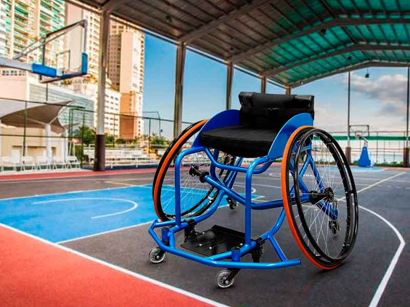
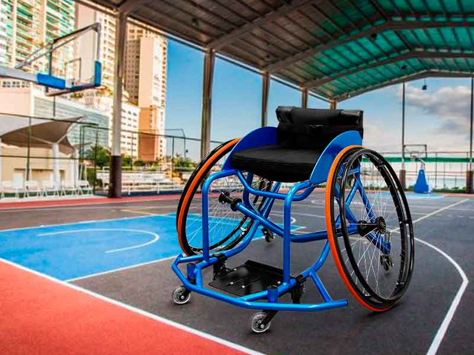

A l’origine, le basket en chaise roulante fut conçu comme moyen de rééducation pour les soldats de la seconde guerre mondiale présentant des lésions de la moëlle épinière. Il fait partie des huit sports qui ont fait leurs débuts aux premiers Jeux Paralympiques à Rome en 1960.
Présentation de la discipline
Le basket fauteuil se joue en fauteuil roulant, par équipes de 5 joueur(se)s.
La pratique du basket-ball en compétition nécessite un fauteuil roulant spécifique, conçu en tenant compte des mensurations, du type de handicap et du rôle du joueur sur le terrain.
Les équipes sont composées de joueurs de handicaps physiques différents. Chacun(e) se voit attribuer, en fonction des caractéristiques de son handicap physique dans le jeu, un nombre de points individuel allant de 1 à 4,5 (5 points pour un joueur valide autorisé à jouer en championnat de France uniquement). Au total, sur le terrain, aucune équipe ne doit représenter un total de points supérieur à 14 points (International), 14,5 (Nationale A).
Les règles du para-basket-ball sont volontairement très proches de celles du basket-ball “traditionnel” afin de faciliter la pratique et l’adaptation des arbitres et entraineurs.
Ainsi, les dimensions du terrain, la hauteur du panier, le temps de jeu, le mode de comptabilisation des points sont inchangés.
Par contre, certaines règles sont modifiées en raison des contraintes liées à l’usage d’un fauteuil roulant par l’ensemble des joueur(se)s. La reprise de dribble est autorisée et la règle du “marché” est remplacée par une limitation du nombre de poussées sur les roues du fauteuil roulant. De même, lors du jugement de toutes les fautes liées au contact entre les joueur(se)s, le fauteuil est considéré comme faisant partie du joueur.
Publics concernés
Il s’adresse aux personnes dont le handicap physique ne permet pas ou plus la pratique du basket-ball traditionnel.
Matériel spécifique utilisé
Sport d’équipe dont le principe est le même que pour le basket debout, les dimensions du terrain et la hauteur du panier restent les mêmes. Les règles du jeu ne sont que très légèrement adaptées. Par exemple, un joueur sera sanctionné d’un « marcher » si quand il est en possession du ballon, il fait plus de deux poussées sur ses roues sans dribbler, tirer ou faire une passe.
Handi’quiment est un service d’hébergement et d’intermédiation en ligne qui permet aux Utilisateurs d’échanger, de vendre et d’acheter des objets sur sa plateforme.
Handi’quiment facilite ces transactions et permet aux Utilisateurs de communiquer par messages privés ou en postant des messages sur le forum. Handi’quiment propose également des services supplémentaires payants pour sécuriser ces transactions (les « Services de Protection Acheteur ») ou pour améliorer la visibilité des articles qu’ils mettent en vente (comme le « boost d’article » ou le « Dressing en Vitrine »).


 
